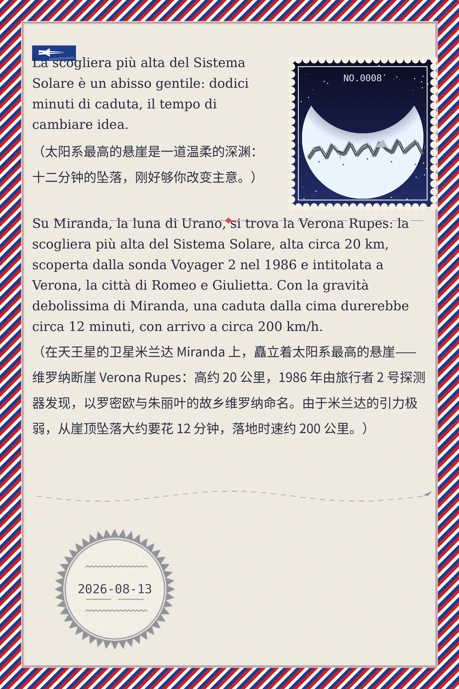

La scogliera più alta del Sistema Solare è un abisso gentile: dodici minuti di caduta, il tempo di cambiare idea. （太阳系最高的悬崖是一道温柔的深渊：十二分钟的坠落，刚好够你改变主意。）
Su Miranda, la luna di Urano, si trova la Verona Rupes: la scogliera più alta del Sistema Solare, alta circa 20 km, scoperta dalla sonda Voyager 2 nel 1986 e intitolata a Verona, la città di Romeo e Giulietta. Con la gravità debolissima di Miranda, una caduta dalla cima durerebbe circa 12 minuti, con arrivo a circa 200 km/h. （在天王星的卫星米兰达 Miranda 上，矗立着太阳系最高的悬崖——维罗纳断崖 Verona Rupes：高约 20 公里，1986 年由旅行者 2 号探测器发现，以罗密欧与朱丽叶的故乡维罗纳命名。由于米兰达的引力极弱，从崖顶坠落大约要花 12 分钟，落地时速约 200 公里。）
05fc124626d3b1b5冷知识由执笔的模型自行查证。逐条断言、来源与所引原句存档在纯文字副本里，未经程序逐字校验，留作事后核实。